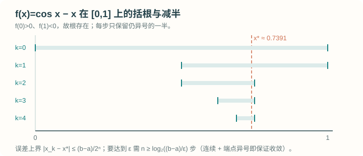
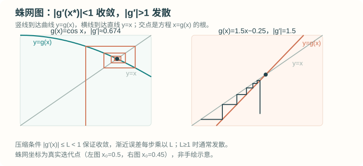
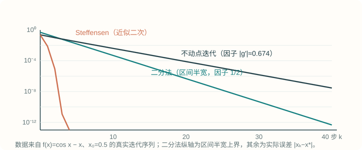

CHAPTER 20 · NUMERICAL ANALYSIS
非线性方程求根（一）：二分法与不动点迭代
五次以上的多项式、cos x − x = 0、反应平衡方程——这些方程绝大多数没有求根公式，只能迭代逼近。本章先立好两根支柱：一根是永不失效的二分法，一根是理解一切迭代法的模型——不动点迭代。
01 · 问题的界定
输入：一个（至少在根附近连续可导的）函数 f，以及可能的括根区间或初值。输出：一个近似根 x̃，使 f(x̃)≈0 或 |x̃−x*|≤ε。假设：根存在；多数方法还需要 f 的连续性与（对二分法）一个异号区间。
为什么要专门讲求根？因为 Abel–Ruffini 定理告诉我们：五次及以上的一般多项式没有根式解，而超越方程（如 cos x = x）更没有通用公式。我们只能构造一个序列 x₀,x₁,… 让它收敛到根。
本章的两类方法代表了两种哲学：括根法（二分法）用区间包围根，可靠但慢；不动点迭代用递推序列逼近根，快慢完全取决于迭代函数的导数。
02 · 二分法：靠介值定理兜底
只要 f 连续且 f(a)·f(b)<0，介值定理就保证 (a,b) 内至少有一个根。二分法利用这一点：取中点 c=(a+b)/2，保留与 f(c) 异号的那一半区间，反复下去。
由于每一步都把区间长度减半，第 n 步后中点与根的距离有确定上界：
因此可事先算出需要的步数：要达到容差 ε，需 n ≥ log₂((b−a)/ε)。对 [0,1]、ε=10⁻¹² 只需约 40 步。这正是二分法的价值：它不需要任何光滑性假设，也不依赖初值好坏，永远能兜底。

f(x)=cos x − x）。每步保留异号的一半，区间长度按 2⁻ⁿ 收缩；误差上界 (b−a)/2ⁿ 是确定的，不依赖 f 的光滑程度。代价：收敛因子固定为 1/2，属于线性收敛，且对重根（f 不变号）与无界区间都无能为力——后者需要先找到一个异号区间。
03 · 不动点迭代与压缩映射
把 f(x)=0 改写成等价形式 x=g(x)，然后反复代入：
核心定理（压缩映射）：若在根附近的一个区间上 |g′(x)| ≤ L < 1，则 g 是该区间上的压缩映射，不动点 x* 存在唯一，且对区间内任意初值迭代都收敛，并有先验误差估计：
同一方程 f(x)=0 可以写成无穷多种 x=g(x)，收敛与否全看 |g′|。以 x²−2=0 为例：g(x)=(x+2/x)/2 在根附近 |g′|<1（收敛，且正是牛顿法）；g(x)=2/x 的 |g′|=1（振荡不收敛）；g(x)=x²+x−2 在根处 |g′|>1（发散）。

y=g(x)、横线到直线 y=x。左图 |g′|≈0.674<1 螺旋收敛；右图 |g′|=1.5>1 向外发散。当 g′(x*)≠0 时，由泰勒展开 e_{k+1}≈g′(x*)e_k，故不动点迭代是线性收敛，渐近常数为 |g′(x*)|。它比二分法“聪明”（能利用 g 的光滑性），但也可能因 g 选得不好而发散。
04 · 收敛阶与 Aitken/Steffensen 加速
收敛快慢用一个精确的度量——收敛阶：
p=1 称线性收敛，p=2 称二次收敛。用泰勒展开可直接读出阶：若 g′(x*)≠0 则 p=1、C=|g′(x*)|；若 g′(x*)=0 且 g″(x*)≠0，则 e_{k+1}≈½g″(x*)e_k²，即 p=2。二次收敛意味着每步有效位数翻倍。
Aitken Δ² 加速能把线性序列“提阶”。对 x_{k+1}−x*≈C(x_k−x*) 消去 C：
其中 Δx_k=x_{k+1}−x_k、Δ²x_k=x_{k+2}−2x_{k+1}+x_k。Steffensen 方法把 Aitken 加速嵌进不动点迭代：每步算 y=g(x)、z=g(y) 再做加速，无需导数就能得到近似二次收敛。

|xₖ−x*|（对数纵轴）。二分法以固定因子 1/2 线性下降，不动点迭代因子约 0.674，Steffensen 在 3–4 步内接近机器精度。| 方法 | 收敛阶 | 需要导数 | 保证收敛 |
|---|---|---|---|
| 二分法 | 线性（因子 1/2） | 否 | 是（有异号区间） |
| 不动点迭代 | 线性（因子 |g′|） | 否 | 仅当 |g′|<1 |
| Steffensen | 近似二次 | 否 | 根附近 |g′|≠1 且 g 光滑 |
05 · 实验与失败边界
以 f(x)=cos x − x（根 x*≈0.7390851332）为例，三种方法达到 10⁻¹² 所需步数差异悬殊。选择方法查看步数：
import math
f = lambda x: math.cos(x) - x
x_star = 0.7390851332151607
# 1) 二分法：连续 + 端点异号 ⇒ 保证收敛
a, b, bis = 0.0, 1.0, 0
while (b - a) / 2 > 1e-12:
c = (a + b) / 2; bis += 1
if f(a) * f(c) <= 0: b = c
else: a = c
assert abs((a + b) / 2 - x_star) < 1e-9
assert bis <= math.ceil(math.log2(1 / 1e-12)) + 1
# 2) 不动点迭代 x = cos x：|g′(x*)| ≈ 0.674 < 1
x, fp = 0.5, 0
while True:
xn = math.cos(x)
if abs(xn - x) < 1e-12: break
x, fp = xn, fp + 1
assert abs(x - x_star) < 1e-9 and fp > bis
# 3) Steffensen：把线性加速成近似二次
x, stf = 0.5, 0
for stf in range(1, 50):
y = math.cos(x); z = math.cos(y); den = z - 2*y + x
if abs(den) < 1e-16: break
xn = x - (y - x)**2 / den
if abs(xn - x) < 1e-12: x = xn; break
x = xn
assert abs(x - x_star) < 1e-9 and stf <= 6
print("bisection", bis, "| fixed-point", fp, "| steffensen", stf)失败边界。第一，二分法必须有异号区间；若 f(a)·f(b)>0 就直接失效，而重根（如 (x−1)²）正是这种情况。第二，不动点迭代只在压缩区间内收敛；|g′|≥1 时通常发散，而 g 的选法不唯一，选错形式就白费功夫。第三，Steffensen 的分母 Δ²x_k 在收敛后期趋于 0，可能除法不稳定，实现时必须加保护。第四，收敛阶公式假设单根；在重根处，无论二次方法还是加速都会退化为线性。
原始资料与延伸阅读
本章将文献结论与本文独立构造的数值示例严格区分；步数与收敛因子均为教学演示。
- SciPy · scipy.optimize.root_scalar：括根法（bisect/brentq）与通量迭代方法的统一接口。
- Nicholas J. Higham, Accuracy and Stability of Numerical Algorithms。SIAM 第二版，2002；求根的误差敏感度与停止准则。
- R. Barrett et al., Templates for the Solution of Linear Systems。SIAM，1994；不动点与压缩映射的收敛框架。